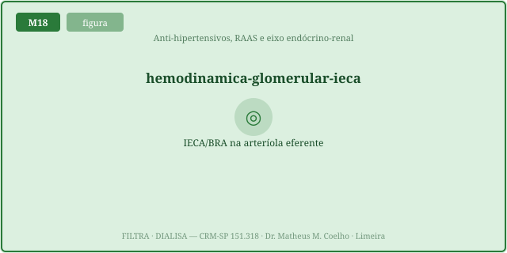
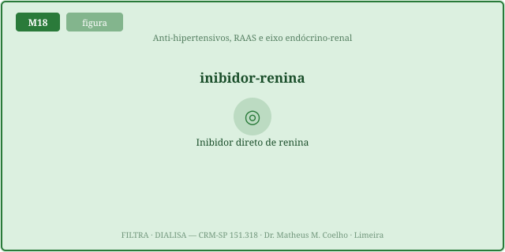
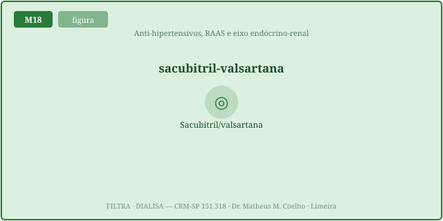
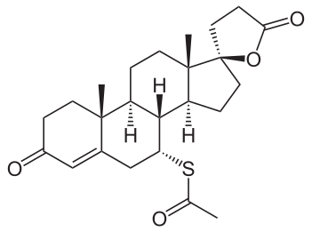
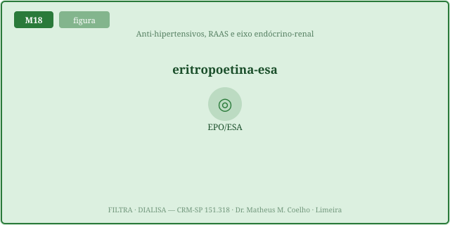
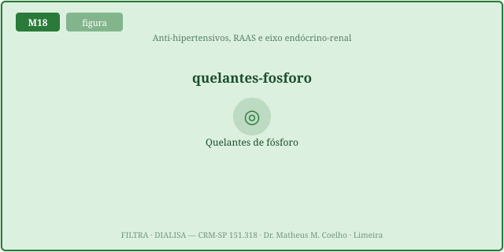
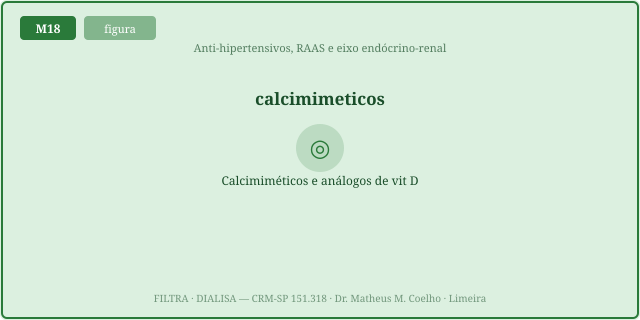

Bloquear o RAAS reescreve a hemodinâmica glomerular — homeostasia da pressão.
Estes fármacos não tratam só "a pressão arterial": eles movem a aferente × eferente do M1 e o eixo
endócrino-renal do M14. As Fig. 1–8 voltam no Caso, na Trilha e na Avaliação (algumas reaparecem nos exercícios).
Atribuição em CREDITS.md (em curadoria).
IECA (enalapril 5–40 mg/dia), BRA (losartana 50–100 mg/dia) e IDR (alisquireno 150–300 mg/dia) reduzem a AngII → a eferente dilata → P_GC↓ → TFG↓ → Cr↑ ~até 30% (esperado), com a FF↓ (fluxo plasmático preservado, o que o separa do dano tubular) e proteinúria↓ (nefroproteção).

Uma alta de Cr de até ~30%, estável, sem hipercalemia, é hemodinâmica e esperada → manter e monitorar. Suspende-se só se Cr↑ >30%, hipercalemia perigosa, ou estenose bilateral de artéria renal — ali a TFG dependia da constrição eferente da AngII, e removê-la vira precipício.


O rim é glândula (M14): na DRC, a ESA (epoetina 50–100 UI/kg 3×/sem) corrige a anemia (Hb↑, alvo conservador, não normalizar); os quelantes de P (sevelâmer 800–1600 mg/refeição) baixam o fosfato; os calcimiméticos (cinacalcete 30–90 mg/dia) e os análogos de vit D baixam o PTH (eco do M12).



A dose certa depende do que o rim e a máquina removem: dose ajustada = f(Vd, ligação proteica, fração renal, clearance). Fármaco hidrofílico, pouco ligado a proteína e de fração renal alta acumula na DRC (↓dose) e é removido pela diálise (re-dosar pós-sessão). Tudo obedece à curva Emax: efeito = Emax·D/(EC50+D), com teto.
Diabético, DRC estágio 3, proteinúria. Iniciamos terapia que age no RAAS e no eixo endócrino-renal.
↓AngII → a eferente dilata (R_E↓) → a represa glomerular cai → P_GC↓ → TFG↓ → Cr↑. É hemodinâmico e esperado (Fig. 1).
Até ~30%, estável, sem hipercalemia → manter e monitorar Cr/K⁺. É o efeito hemodinâmico esperado, não dano.
A FF cai (fluxo plasmático preservado) e o sedimento é limpo; na NTA a FF não cai e o sedimento suja. Hemodinâmico ≠ estrutural.
Na estenose bilateral de artéria renal (ou rim único estenótico): a TFG dependia da constrição eferente da AngII; remover a AngII derruba a P_GC ao chão (precipício). A anatomia decide.
O IECA bloqueia a enzima conversora (↓formação de AngII); o BRA bloqueia o receptor AT₁. Mesmo efeito glomerular; o BRA dá menos tosse (Fig. 2).
Inibe a renina no topo da cascata (150–300 mg/dia). Não combinar com IECA/BRA — duplo/triplo bloqueio aumenta hipercalemia e LRA (Fig. 3).
O sacubitril ↑peptídeos natriuréticos inibindo a neprilisina; somado ao IECA, o risco de angioedema sobe. Usa-se a forma com BRA (ARNI).
O ARM (espironolactona 25–50 mg/dia): bloqueia a aldosterona no coletor → menos secreção de K⁺ → hipercalemia, sobretudo com IECA/BRA (Fig. 5).
K⁺ ≥ ~5,5 mmol/L perigoso → recuar mesmo com ΔCr pequena. O potássio é o eletrólito que mata; tem prioridade sobre a creatinina.
Hb ~10–11,5 g/dL — conservador. Normalizar a Hb piora desfechos cardiovasculares. Epoetina 50–100 UI/kg 3×/sem após repor ferro (Fig. 6).
Baixar PO₄ (quelantes, sevelâmer 800–1600 mg/refeição) e baixar PTH (calcimiméticos, cinacalcete; análogos de vit D) — o triângulo Ca-PO₄-PTH (Fig. 7–8, M12).
Vd, ligação proteica, fração renal de eliminação e clearance. Hidrofílico + pouco ligado + fração renal alta → acumula na DRC (↓dose) e a diálise remove (re-dose pós-sessão).
Os fármacos defendem o meio interno reescrevendo a hemodinâmica glomerular (pressão) e o eixo endócrino (anemia, mineral) que o rim doente já não mantém. A Cr que sobe é o preço fisiológico da proteção.
Os controles do Lab alimentam esta curva: o ΔCr% esperado sobe com a dose de IECA/BRA. A zona verde (≤30%) é "manter"; a vermelha (>30%) é "suspender". Ligue a estenose bilateral e veja a curva benigna virar precipício.
| Variável | Atual | Comentário |
|---|---|---|
| ΔP_GC (fração) | — | eferente dilata → P_GC↓ |
| TFG resultante (mL/min) | — | cai com o bloqueio |
| ΔCr esperada (%) | — | ≤30% = esperado |
| Proteinúria resultante (g/dia) | — | cai (nefroproteção) |
| K⁺ resultante (mmol/L) | — | ≥5,5 = perigo |
| Hb resultante (g/dL) | — | alvo ~10–11,5 |
| PTH / PO₄ resultante | — | calcimimético/quelante |
| Dose renal ajustada | — | Vd·ligação·fr·clearance |
| Conduta | — | manter × suspender |